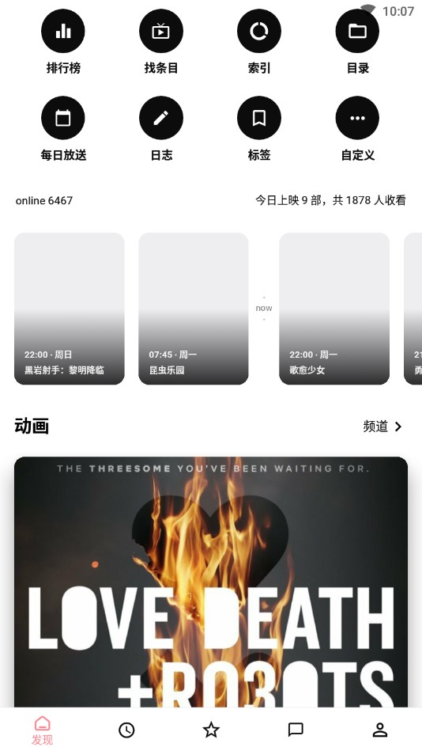

Bangumi 客户端深度盘点：一个追番工具能做到什么、不能做到什么
从设计取向到功能矩阵，从社区表达体系到角色人物数据库，系统性梳理 Bangumi 移动端客户端的能力边界与取舍——资深用户视角下的完整盘点。
追番这件事，在国内的工具生态里一直有点尴尬：要么是资源聚合站，版权和安全都没底；要么是评分社区，手机端体验一言难尽。关于它的整体定位，可以先逛逛bangumi官网。它选了一条看起来不那么"好用"的路——它不让你在应用里看番，也没有广告信息流赚你的停留时长。但就是这样一款"反直觉"的工具，在二次元圈里活了好几年，还在持续更新。
这篇盘点不想做功能列表的扩写，而是按能力域把它能做的事、做不好的事、为什么这么做，系统性铺开。如果你已经在用它，可能会发现一些你没踩过的路径；如果你在犹豫要不要入，至少能知道它的边界在哪。
设计取向：几个核心取舍决定了它的长相
先把底层逻辑掰明白。Bangumi 客户端的几个设计决策，几乎解释了它所有功能的"有或没有"。
不放广告、不做会员。项目自述是爱好驱动、不以盈利为目的，收入来源只有自愿投食的打赏，代码 MIT 开源。这意味着你永远不会在应用里看到开屏、横幅、信息流推广那些东西，也没有会员才能解锁的"高级功能"。干净是真的干净，但也意味着它的更新节奏跟着开发者的个人精力走，不是商业公司的季度排期。开发者自己也坦诚说过，最初是为了练手 React Native 才启动的项目，一写就是从 0.37 时代到现在——练手项目长成基础设施，这种轨迹本身就挺有意思。
记录优先，观看靠跳转。这是最反直觉的一条：追番工具反而不让你追番。客户端刻意不内置播放器、不提供资源下载，它的定位就是管理全网追番收藏和进度记录。你标记的番剧，它会收集好各平台的播放源入口，想看时跳转到浏览器或对应视频应用。这个取舍换来干净的法律边界和专注的工具定位，但也意味着它不是那种"打开应用就能看一下午"的消遣工具。
移动端原生重做，不是网页套壳。网页版的页面结构直接搬到手机上并不好用，所以开发者基于移动端重新设计了布局：条目、角色、帖子等核心页面按手机竖屏习惯重排，高频入口放在底部导航单手可达，还加了不少网页端做不了的功能——词云、评分月刊、照片墙这些都是手机端的特色。
核心能力域一：收藏与进度管理的五种状态
说到追番工具，收藏是第一要务。Bangumi 把收藏状态拆成了五种：想看、看过、在看、搁置、抛弃——这比一般的"收藏/看过"二元状态精细得多，也确实能覆盖追番的各种中间态。
点格子（标记集数进度）是它的标志性交互。每看完一集就在条目页点一下，系统自动记录观看进度，下次打开接着看时会跳回上次的位置。几个月后回看收藏夹，时间线上一目了然的观看轨迹，比单纯打个分有用得多。
收藏时顺手留一条短评，是社区里被反复推荐的好习惯。当时一句话的观感——"作画经费爆炸""男主嘴替了"——几个月后翻回来看，往往比任何长篇分析都更接近真实感受。
核心能力域二：社区表达的两层体系
打分是态度，评论是表达。Bangumi 在条目下提供了两层表达空间，客户端把它们都搬进了手机，而且区分得很清楚。
吐槽箱是即时反应区。一两句话的碎片感想，玩梗、进度打卡、当场的情绪都可以往这里丢。位置就在条目页的吐槽箱，收藏或点格子时也可以顺手写一条。吐槽可以设公开或仅自己可见——想纯当记录本用完全没问题，不必担心被围观。你自己的吐槽会在收藏下方显示，时光机里也能回溯完整历史。
长评与讨论是认真说话的地方。条目页下方的评论区适合展开分析：剧情梳理、作画考据、原作对比、推荐人群说明都在这里。还有几个细分入口值得知道：单集讨论区（部分番剧每集播出后有独立讨论，避免后续剧透污染）、条目讨论版（围绕整个条目的话题帖）、日志（几百字以上的深度长文建议写成日志，排版和曝光都更好）。
什么场景去哪层说，社区内部有明确的分工——想完整推荐或避雷就写条目长评，针对某一集的剧情就进章节讨论，多作品横向对比或年度总结就写成日志。
核心能力域三：角色与人脉数据库的深挖玩法
Bangumi 不止收录作品，角色和人物（声优、监督、脚本家等创作者）也是独立条目，彼此之间连成一张大网。客户端把这张网做成了手机上顺滑可刷的形态，这一点是很多追番工具完全没有的。
角色页展示动画角色的设定、出演声优、出演作品列表，解决"这个角色还在哪些番里出现过"的问题；人物页展示声优/监督/脚本家的参与作品全集，解决"这位监督还做过什么"的问题。两者是双向跳转的枢纽：从条目页点角色进角色页，从角色页点作品回条目页，从人物页能看到 TA 参与的全部作品。
社区里流传着一条"深挖循环"：看完一部爱上的作品，进条目页记住某位声优或监督的名字，跳到 TA 的人物页翻参与作品按评分排序，挑高分未看的作品进条目页收藏——循环往复。这条路径的命中率远高于盲目刷推荐，尤其适合片荒但口味明确的阶段。
客户端还加了几个角色相关的特色功能：角色定位筛选工具条把主角、配角、路人分开看；角色和人物都有词云，被讨论最多的点一眼可见；"我的人物"是个人维基的一部分，用来整理自己收藏过的心头好。更完整的角色深挖玩法在bangumi文档里有系统说明。

核心能力域四：多环境适配的务实分工
虽然主要按手机竖屏设计，但 Bangumi 客户端并非只能在手机上用。开发者的适配声明覆盖了 iOS / Android / WSA，以及移动端 SPA 方向。
安卓平板可以用，但布局是"简单 Pad"——按手机比例放大，不是为宽屏重排的双栏布局，竖持体验好于横持。Windows 用户可以通过 WSA（安卓子系统）侧载从官方下载拿的 APK 安装，电脑上也能跑起来，但同样受限于手机布局的放大效果。
一个务实的分工建议是：查条目、点格子、刷动态——客户端（含平板、WSA）都很顺；批量整理收藏、编辑条目、写长文——切到电脑网页版，键盘和大屏的优势在这里。
短板也要说：它不解决什么
盘点不能只说好的。Bangumi 客户端有几个明确的短板和局限：
不解决观看问题。最直接的一条——你标记了番剧，它只给你播放源的跳转入口，不做播放也不做下载。想在应用里一口气看完一整季？不行。这对于只想要"一个应用搞定所有事"的用户来说是硬伤。
平板体验只是能用。没有为宽屏做专门布局，横屏下不少页面留白明显，看起来像是"被放大的手机界面"而不是"平板原生体验"。
更新节奏依赖个人。开源爱好者项目的通病：当开发者个人精力紧张时，更新就会慢下来。没有公司团队的排期保障，也没有测试团队的多机型覆盖——某些冷门机型上的适配问题可能不会被优先处理。
社区数据靠用户维护。条目信息、角色关联、维基内容都是社区编辑的，虽然有自我修复机制，但数据质量始终依赖编辑社区的活跃度和专业度。某些小众作品的条目信息可能不全或有误。
什么样的人该用它
盘完能力和短板，最后收一下画像——Bangumi 客户端适合谁？
重度追番且有记录习惯的人。如果你每追一部番都想记点什么——打分、吐槽、进度，甚至写点分析——它的五种收藏状态、两层表达体系、角色深挖循环，能把你的追番历史沉淀成一份可回溯的个人数据库。几个月后翻回看当年的吐槽，往往比任何第三方影评都更真实。
想脱离资源聚合站的人。厌倦了版权灰色地带、弹窗广告、资源不稳定，想要一个干净合法的追番管理工具——Bangumi 客户端的"只记录不播放"定位正好踩在这个需求上。跳转外链虽然不够方便，但换来了安心。
喜欢社区氛围的人。Bangumi 的社区讨论质量在同类里算高的，条目吐槽、长评、章节讨论、日志各有分工，角色和人物数据库的深挖玩法也是独一份。如果你不满足于"看完就走"，想找同好讨论、想按创作者维度发现新作，它能提供比评分数字多得多的东西。
项目以 MIT 许可证开源，完整源码分别托管在 GitHub、Gitee 和 GitCode，方便不同网络环境下的开发者查阅。